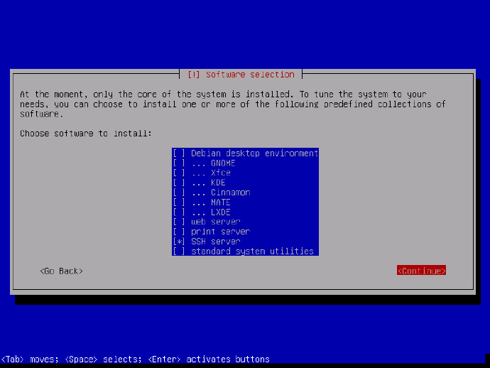
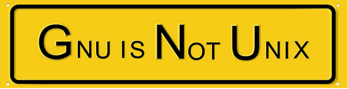

本章回顾
我们来回顾一下 😌
上一部分我们都讲了什么？🤔
- 讲了文件管理器和命令行终端互相交互
- 用命令 nautilus 在文件管理器打开某路径
这次我们一起来看看 图形用户界面 (GUI) 的情况。
图形界面和发行版的关系
- 一个发行版可以使用多个图形界面
- 常见的有
- kde
- gnome
- xfce
下图是 debian 安装过程中的一步，可以多选图形用户界面，图形用户界面也是一种应用软件包。

KDE
KDE = K Desktop Environment
- KDE 桌面图形环境是 Linux 几大桌面里的老大
- 第一个诞生出来的 linux 桌面环境 (1996 年，由德国人 Matthias Ettrich 发起的）
- KDE 是为了类 unix 环境制作的 (unix、bsd 都能用）
- KDE 基于 Qt
那什么是 Qt 呢？
Qt
- Qt 是一个开源的 C++ 跨平台图形界面开发库
- Qt 是成形的开发用户界面开发平台
- WPS 就是用 Qt 开发的
- Qt 属于 Trolltech（直译为喷子科技），后被 nokia 收购，又被出售给 Digia
- Qt 升级带动 KDE 升级，有一段 KDE 为了追 Qt4 新特性，重写了 KDE，稳定性降低，KDE4.2 才恢复，这段时间很多人转投 gnome。
GNOME
GNOME [ɡˈnoʊm] 两种发音 格弄姆，现在处于主流，以下发行版默认：
GNOME 使用 C 语言编写，使用的库是 gtk。
gtk
- gtk+是 gnu 计划的一部分，使用 gpl 协议
- 什么是gpl协议呢？
- GNU 公共许可
- 是一种开源协议
- 如果你的软件中包含gpl的内容
- 也必须开源
- 那什么是gnu呢？

gnu
- Gnu is Not Unix
- 在at&t把unix商业化之后
- 由stallman发起了free software revolution 自由软件革命
- 后来演化为今天的open source movement 开源运动
- 希望代码有全人类共有
- 对于软件做开源、免费的限定
- 希望把大资本屏蔽在外面
- 这一情况发生在各个领域
- 软件领域就是gnu
- gtk 的全称是 GIMP Toolkit
- GIMP 是著名开源图像制作软件
-
以下软件使用 gtk：
-
Inkscape
- firefox
- chrome
- gnome
- xfce
Xfce
- 发音就是四个字母
- "Xfce" 的名字最初是代表的是"XForms Common Environment"
- Xfce 是用 GTK2 toolkit 编写基于 c 语言
- 轻量，占用资源少，速度快，适合老硬件
- 历史悠久，96 年就有
- 可用作 u 盘系统
- linus 本人觉得好用
升级
sudo apt update
sudo apt upgrade xfce4
总结 🤨
查看当前 gui：
- 这次了解了各种 gui（估衣）🥋
- 各种图形界面五光十色
- 五色令人目盲 👁
- 命令行才是根本！!!
- 下次再说！👋